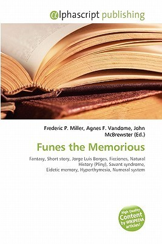

Home »
Summary of Funes, the Memorious by Jorge Luis Borges
This book is about a teenage boy who sustained a head injury, so he remembers everything. He thinks that a dog in one neighbor's yard from the front
is different from the same dog but from the back. He remembers everything that happened every second of the day that he is unable to sleep because
of it.

Funes, the Memorious Character List
| Character Name |
Description |
| Ireneo Funes |
The teenage boy that remembers everything after a head injury. |
| The Narrator |
An Argentinian unnamed person that likes to horseback ride in rainstorms. |
| Bernardo Haedo |
The narrator's cousin that told the narrator about Funes' injury. |
| Maria Clementina |
Funes' mother. She takes care of Funes and irons clothes as her job. |
D&D Alignment Chart of Funes, the Memorious Characters
| Lawful Good |
Neutral Good |
Chaotic Good |
| Lawful Neutral |
True NeutralIreno FunesMaria ClementinaThe NarratorBernardo Haedo |
Chaotic Neutral |
| Lawful Evil |
Neutral Evil |
Chaotic Evil |
« Previous
Next »
Home »